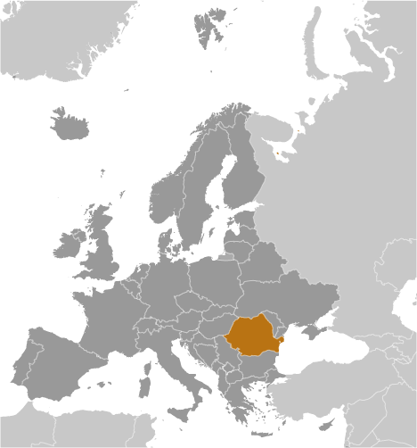
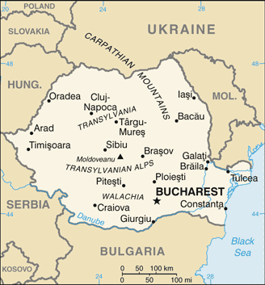
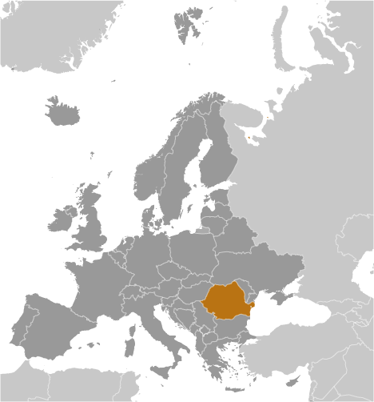
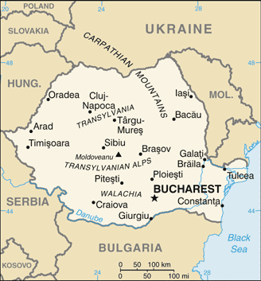

Europe :: ROMANIA
Introduction :: ROMANIA
-
The principalities of Wallachia and Moldavia - for centuries under the suzerainty of the Turkish Ottoman Empire - secured their autonomy in 1856; they were de facto linked in 1859 and formally united in 1862 under the new name of Romania. The country gained recognition of its independence in 1878. It joined the Allied Powers in World War I and acquired new territories - most notably Transylvania - following the conflict. In 1940, Romania allied with the Axis powers and participated in the 1941 German invasion of the USSR. Three years later, overrun by the Soviets, Romania signed an armistice. The post-war Soviet occupation led to the formation of a communist "people's republic" in 1947 and the abdication of the king. The decades-long rule of dictator Nicolae CEAUSESCU, who took power in 1965, and his Securitate police state became increasingly oppressive and draconian through the 1980s. CEAUSESCU was overthrown and executed in late 1989. Former communists dominated the government until 1996 when they were swept from power. Romania joined NATO in 2004 and the EU in 2007.
Geography :: ROMANIA
-
Southeastern Europe, bordering the Black Sea, between Bulgaria and Ukraine46 00 N, 25 00 EEuropetotal: 238,391 sq kmland: 229,891 sq kmwater: 8,500 sq kmcountry comparison to the world: 84twice the size of Pennsylvania; slightly smaller than Oregontotal: 2,844 kmborder countries (5): Bulgaria 605 km, Hungary 424 km, Moldova 683 km, Serbia 531 km, Ukraine 601 km225 kmterritorial sea: 12 nmcontiguous zone: 24 nmexclusive economic zone: 200 nmcontinental shelf: 200-m depth or to the depth of exploitationtemperate; cold, cloudy winters with frequent snow and fog; sunny summers with frequent showers and thunderstormscentral Transylvanian Basin is separated from the Moldavian Plateau on the east by the Eastern Carpathian Mountains and separated from the Walachian Plain on the south by the Transylvanian Alpsmean elevation: 414 melevation extremes: lowest point: Black Sea 0 mhighest point: Moldoveanu 2,544 mpetroleum (reserves declining), timber, natural gas, coal, iron ore, salt, arable land, hydropoweragricultural land: 60.7%arable land 39.1%; permanent crops 1.9%; permanent pasture 19.7%forest: 28.7%other: 10.6% (2011 est.)31,490 sq km (2012)urbanization is not particularly high, and a fairly even population distribution can be found throughout most of the country, with urban areas attracting larger and denser populations; Hungarians, the country's largest minority, have a particularly strong presence in eastern Transylvaniaearthquakes, most severe in south and southwest; geologic structure and climate promote landslidessoil erosion and degradation; water pollution; air pollution in south from industrial effluents; contamination of Danube delta wetlandsparty to: Air Pollution, Air Pollution-Persistent Organic Pollutants, Antarctic-Environmental Protocol, Antarctic Treaty, Biodiversity, Climate Change, Climate Change-Kyoto Protocol, Desertification, Endangered Species, Environmental Modification, Hazardous Wastes, Law of the Sea, Ozone Layer Protection, Ship Pollution, Wetlandssigned, but not ratified: none of the selected agreementscontrols the most easily traversable land route between the Balkans, Moldova, and Ukraine; the Carpathian Mountains dominate the center of the country, while the Danube River forms much of the southern boundary with Serbia and Bulgaria
People and Society :: ROMANIA
-
21,529,967 (July 2017 est.)country comparison to the world: 58noun: Romanian(s)adjective: RomanianRomanian 83.4%, Hungarian 6.1%, Romani 3.1%, Ukrainian 0.3%, German 0.2%, other 0.7%, unspecified 6.1% (2011 est.)note: Romani populations are usually underestimated in official statistics and may represent 5–11% of Romania's populationRomanian (official) 85.4%, Hungarian 6.3%, Romani 1.2%, other 1%, unspecified 6.1% (2011 est.)Eastern Orthodox (including all sub-denominations) 81.9%, Protestant (various denominations including Reformed and Pentecostal) 6.4%, Roman Catholic 4.3%, other (includes Muslim) 0.9%, none or atheist 0.2%, unspecified 6.3% (2011 est.)0-14 years: 14.35% (male 1,586,976/female 1,502,864)15-24 years: 10.6% (male 1,170,679/female 1,110,727)25-54 years: 46.03% (male 5,016,529/female 4,893,792)55-64 years: 12.61% (male 1,271,281/female 1,443,414)65 years and over: 16.41% (male 1,428,599/female 2,105,106) (2017 est.)total dependency ratio: 48youth dependency ratio: 22.8elderly dependency ratio: 25.2potential support ratio: 4 (2015 est.)total: 41.1 yearsmale: 39.7 yearsfemale: 42.6 years (2017 est.)country comparison to the world: 42-0.33% (2017 est.)country comparison to the world: 2208.9 births/1,000 population (2017 est.)country comparison to the world: 20912 deaths/1,000 population (2017 est.)country comparison to the world: 22-0.2 migrant(s)/1,000 population (2017 est.)country comparison to the world: 113urbanization is not particularly high, and a fairly even population distribution can be found throughout most of the country, with urban areas attracting larger and denser populations; Hungarians, the country's largest minority, have a particularly strong presence in eastern Transylvaniaurban population: 54.9% of total population (2017)rate of urbanization: 0.05% annual rate of change (2015-20 est.)BUCHAREST (capital) 1.868 million (2015)at birth: 1.06 male(s)/female0-14 years: 1.06 male(s)/female15-24 years: 1.05 male(s)/female25-54 years: 1.02 male(s)/female55-64 years: 0.88 male(s)/female65 years and over: 0.68 male(s)/femaletotal population: 0.95 male(s)/female (2016 est.)26.7 years (2014 est.)31 deaths/100,000 live births (2015 est.)country comparison to the world: 112total: 9.4 deaths/1,000 live birthsmale: 10.7 deaths/1,000 live birthsfemale: 8 deaths/1,000 live births (2017 est.)country comparison to the world: 144total population: 75.4 yearsmale: 71.9 yearsfemale: 79 years (2017 est.)country comparison to the world: 1081.35 children born/woman (2017 est.)country comparison to the world: 2145.6% of GDP (2014)country comparison to the world: 1222.67 physicians/1,000 population (2013)6.1 beds/1,000 population (2011)improved:urban: 100% of populationrural: 100% of populationtotal: 100% of populationunimproved:urban: 0% of populationrural: 0% of populationtotal: 0% of population (2015 est.)improved:urban: 92.2% of populationrural: 63.3% of populationtotal: 79.1% of populationunimproved:urban: 7.8% of populationrural: 36.7% of populationtotal: 20.9% of population (2015 est.)0.1% (2016 est.)country comparison to the world: 10416,000 (2016 est.)country comparison to the world: 81<200 (2016 est.)22.5% (2016)country comparison to the world: 762.9% of GDP (2012)country comparison to the world: 104definition: age 15 and over can read and writetotal population: 98.8%male: 99.1%female: 98.5% (2015 est.)total: 15 yearsmale: 15 yearsfemale: 15 years (2015)total: 21.7%male: 20.6%female: 23.4% (2015 est.)country comparison to the world: 45
Government :: ROMANIA
-
conventional long form: noneconventional short form: Romanialocal long form: nonelocal short form: Romaniaetymology: the name derives from the Latin "Romanus" meaning "citizen of Rome" and was used to stress the common ancient heritage of Romania's three main regions - Moldavia, Transylvania, and Wallachia - during their gradual unification between the mid-19th century and early 20th centurysemi-presidential republicname: Bucharestgeographic coordinates: 44 26 N, 26 06 Etime difference: UTC+2 (7 hours ahead of Washington, DC, during Standard Time)daylight saving time: +1hr, begins last Sunday in March; ends last Sunday in October41 counties (judete, singular - judet) and 1 municipality* (municipiu); Alba, Arad, Arges, Bacau, Bihor, Bistrita-Nasaud, Botosani, Braila, Brasov, Bucuresti (Bucharest)*, Buzau, Calarasi, Caras-Severin, Cluj, Constanta, Covasna, Dambovita, Dolj, Galati, Gorj, Giurgiu, Harghita, Hunedoara, Ialomita, Iasi, Ilfov, Maramures, Mehedinti, Mures, Neamt, Olt, Prahova, Salaj, Satu Mare, Sibiu, Suceava, Teleorman, Timis, Tulcea, Vaslui, Valcea, Vrancea9 May 1877 (independence proclaimed from the Ottoman Empire; 13 July 1878 independence recognized by the Treaty of Berlin); 26 March 1881 (kingdom proclaimed); 30 December 1947 (republic proclaimed)Unification Day (unification of Romania and Transylvania), 1 December (1918)history: several previous; latest adopted 21 November 1991, approved by referendum and effective 8 December 1991amendments: initiated by the president of Romania through a proposal by the government, by at least one-fourth of deputies or senators in Parliament, or by petition of eligible voters representing at least one-half of Romania’s counties; passage requires at least two-thirds majority vote by both chambers or – if mediation is required - by three-fourths majority vote in a joint session, followed by approval in a referendum; articles including those on national sovereignty, form of government, political pluralism, and fundamental rights and freedoms cannot be amended; amended 2003 (2016)civil law systemaccepts compulsory ICJ jurisdiction with reservations; accepts ICCt jurisdictioncitizenship by birth: nocitizenship by descent only: at least one parent must be a citizen of Romaniadual citizenship recognized: yesresidency requirement for naturalization: 5 years18 years of age; universalchief of state: President Klaus Werner IOHANNIS (since 21 December 2014)head of government: Prime Minister Mihai TUDOSE (since 29 June 2017); Deputy Prime Minister Sevil SHHAIDEH and Deputy Premier Gratiela GAVRILESCU (since 3 April 2017)cabinet: Council of Ministers appointed by the prime ministerelections/appointments: president directly elected by absolute majority popular vote in 2 rounds if needed for a 5-year term (eligible for a second term); election last held on 2 November 2014 with a runoff on 16 November 2014 (next to be held in November 2019); prime minister appointed by the president with consent of Parliamentelection results: Klaus IOHANNIS elected president; percent of vote in runoff - Klaus IOHANNIS (PNL) 54.4%, Victor PONTA (PSD) 45.6%; Mihai TUDOSE approved as prime minister 275-102description: bicameral Parliament or Parlament consists of the Senate or Senat (136 seats, 2 reserved for the diaspora; members serve 4-year terms) and the Chamber of Deputies or Camera Deputatilor (329 seats, 17 reserved for non-Hungarian national minorities and 4 for the diaspora; members serve 4-year terms); in 2016, the elections returned to a party list vote-proportional representation voting systemelections: Senate - last held on 11 December 2016 (next to be held by December 2020); Chamber of Deputies - last held on 11 December 2016 (next to be held by December 2020)election results: Senate - percent of vote by party - PSD 45.7%, PNL 20.4%, USR 8.9%, UDMR 6.2%, ALDE 6%, PMP 5.7%, other 7.1%; seats by party - PSD 67, PNL 30, USR 13, UDMR 9, ALDE 9, PMP 8; Chamber of Deputies - percent of vote by party - PSD 45.5%, PNL 20%, USR 8.9%, UDMR 6.2%, ALDE 5.6%, PMP 5.4%, other 8.4%; seats by party - PSD 154, PNL 69, USR 30, UDMR 21, ALDE 20, PMP 18, minorities 17highest court(s): High Court of Cassation and Justice (consists of 111 judges organized into civil, penal, commercial, contentious administrative and fiscal business, and joint sections); Supreme Constitutional Court (consists of 9 members)judge selection and term of office: High Court of Cassation and Justice judges appointed by the president upon nomination by the Superior Council of Magistracy, a 19-member body of judges, prosecutors, and law specialists; judges appointed for 6-year renewable terms; Constitutional Court members - 6 elected by Parliament and 3 appointed by the president; members serve 9-year, nonrenewable termssubordinate courts: Courts of Appeal; regional tribunals; first instance courts; military and arbitration courtsChristian-Democratic National Peasants' Party or PNT-CD [Aurelian PAVELESCU]Democratic Union of Hungarians in Romania or UDMR [Hunor KELEMEN]Ecologist Party of Romania or PER [Danut POP]Greater Romania Party or PRM [Adrian POPESCU]M10 Party [Monica MACOVEI]National Liberal Party or PNL [Ludovic ORBAN]New Republic Party or NR [Alin Ioan BOTA]Our Romania Alliance [Marian MUNTEANU]Popular Movement Party or PMP [Traian BASESCU]Alliance of Liberals and Democrats or ALDE [Calin POPESCU TARICEANU]Romanian Social Party or PSRo [Mircea GEOANA]Save Romania Union Party or USR [Elek LEVENTE, interim]Social Democratic Party or PSD [Liviu DRAGNEA]United Romania Party or PRU [Andrei PITICAS]various human rights and professional associationsAustralia Group, BIS, BSEC, CBSS (observer), CD, CE, CEI, EAPC, EBRD, ECB, EIB, ESA, EU, FAO, G-9, IAEA, IBRD, ICAO, ICC (national committees), ICCt, ICRM, IDA, IFAD, IFC, IFRCS, IHO, ILO, IMF, IMO, IMSO, Interpol, IOC, IOM, IPU, ISO, ITSO, ITU, ITUC (NGOs), LAIA (observer), MIGA, MONUSCO, NATO, NSG, OAS (observer), OIF, OPCW, OSCE, PCA, SELEC, UN, UNCTAD, UNESCO, UNHCR, UNIDO, Union Latina, UNMIL, UNMISS, UNOCI, UNWTO, UPU, WCO, WFTU (NGOs), WHO, WIPO, WMO, WTO, ZCchief of mission: Ambassador George Cristian MAIOR (since 17 September 2015)chancery: 1607 23rd Street NW, Washington, DC 20008telephone: [1] (202) 332-4846, 4848, 4851, 4852FAX: [1] (202) 232-4748consulate(s) general: Chicago, Los Angeles, New Yorkchief of mission: Ambassador Hans G. KLEMM (since 21 September 2015)embassy: 4-6, Dr. Liviu Librescu Blvd., District 1, Bucharest, 015118mailing address: American Embassy Bucharest, US Department of State, 5260 Bucharest Place, Washington, DC 20521-5260 (pouch)telephone: [40] (21) 200-3300FAX: [40] (21) 200-3442three equal vertical bands of cobalt blue (hoist side), chrome yellow, and vermilion red; modeled after the flag of France, the colors are those of the principalities of Walachia (red and yellow) and Moldavia (red and blue), which united in 1862 to form Romania; the national coat of arms that used to be centered in the yellow band has been removednote: now similar to the flag of Chad, whose blue band is darker; also resembles the flags of Andorra and Moldovagolden eagle; national colors: blue, yellow, redname: "Desteapta-te romane!" (Wake up, Romanian!)lyrics/music: Andrei MURESIANU/Anton PANNnote: adopted 1990; the anthem was written during the 1848 Revolution
Economy :: ROMANIA
-
Romania, which joined the EU on 1 January 2007, began the transition from communism in 1989 with a largely obsolete industrial base and a pattern of output unsuited to the country's needs. Romania's macroeconomic gains have only recently started to spur creation of a middle class and to address Romania's widespread poverty. Corruption and red tape continue to permeate the business environment.In the aftermath of the global financial crisis, Romania signed a $26 billion emergency assistance package from the IMF, the EU, and other international lenders, but GDP contracted until 2011. In March 2011, Romania and the IMF/EU/World Bank signed a 24-month precautionary standby agreement, worth $6.6 billion, to promote fiscal discipline, encourage progress on structural reforms, and strengthen financial sector stability; no funds were drawn. In September 2013, Romanian authorities and the IMF/EU agreed to a follow-on standby agreement, worth $5.4 billion, to continue with reforms. This agreement expired in September 2015, and no funds were drawn. Progress on structural reforms has been uneven, and the economy still is vulnerable to external shocks.Economic growth rebounded in the 2013-16 period, driven by strong industrial exports and excellent agricultural harvests, and the fiscal deficit was reduced substantially. Industry outperformed other sectors of the economy in 2016. Exports remained an engine of economic growth, led by trade with the EU, which accounts for roughly 70% of Romania trade. Domestic demand was a second driver, due to the mid-2015 cut, from 24% to 9%, of the VAT levied upon foodstuffs. In 2015, the Government of Romania succeeded in meeting its annual target for the budget deficit, the external deficit remained low, even if it rose due to increasing imports. For the first time since 1989, inflation turned into deflation, allowing for a gradual loosening of monetary policy throughout the period.An aging population, significant tax evasion, insufficient health care, and an aggressive loosening of the fiscal package jeopardize the low fiscal deficit and public debt and are the economy's top vulnerabilities.$441.6 billion (2016 est.)$416 billion (2015 est.)$396 billion (2014 est.)note: data are in 2016 dollarscountry comparison to the world: 43$187.6 billion (2016 est.)4.8% (2016 est.)3.9% (2015 est.)3.1% (2014 est.)country comparison to the world: 42$22,300 (2016 est.)$21,200 (2015 est.)$20,300 (2014 est.)note: data are in 2016 dollarscountry comparison to the world: 8322.7% of GDP (2016 est.)23.7% of GDP (2015 est.)24% of GDP (2014 est.)country comparison to the world: 67household consumption: 68.5%government consumption: 7.4%investment in fixed capital: 22.7%investment in inventories: 2.4%exports of goods and services: 41.4%imports of goods and services: -42.3% (2016 est.)agriculture: 4.4%industry: 34.2%services: 63.3% (2016 est.)wheat, corn, barley, sugar beets, sunflower seed, potatoes, grapes; eggs, sheepelectric machinery and equipment, auto assembly, textiles and footwear, light machinery, metallurgy, chemicals, food processing, petroleum refining, mining, timber, construction materials1.5% (2016 est.)country comparison to the world: 1308.979 million (2016 est.)country comparison to the world: 55agriculture: 28.3%industry: 28.9%services: 42.8% (2014)5.9% (2016 est.)6.8% (2015 est.)country comparison to the world: 7822.4% (2012 est.)lowest 10%: 15.3%highest 10%: 7.6% (2014 est.)27.3 (2012)28.2 (2010)country comparison to the world: 136revenues: $55.12 billionexpenditures: $59.62 billion (2016 est.)29.5% of GDP (2016 est.)country comparison to the world: 83-2.4% of GDP (2016 est.)country comparison to the world: 9837.6% of GDP (2016 est.)38% of GDP (2015 est.)note: defined by the EU's Maastricht Treaty as consolidated general government gross debt at nominal value, outstanding at the end of the year in the following categories of government liabilities: currency and deposits, securities other than shares excluding financial derivatives, and loans; general government sector comprises the subsectors: central government, state government, local government, and social security fundscountry comparison to the world: 141calendar year-1.6% (2016 est.)-0.6% (2015 est.)country comparison to the world: 51.75% (31 December 2015)2.75% (31 December 2014)country comparison to the world: 1195.71% (31 December 2016 est.)6.77% (31 December 2015 est.)country comparison to the world: 126$41.82 billion (31 December 2016 est.)$36.06 billion (31 December 2015 est.)country comparison to the world: 56$72.97 billion (31 December 2016 est.)$68.99 billion (31 December 2015 est.)country comparison to the world: 60$60.3 billion (31 December 2016 est.)$64.47 billion (31 December 2015 est.)country comparison to the world: 62$36.5 billion (31 December 2015 est.)$41.04 billion (31 December 2014 est.)$42.59 billion (31 December 2013 est.)country comparison to the world: 59$-4.389 billion (2016 est.)$-2.171 billion (2015 est.)country comparison to the world: 172$57.72 billion (2016 est.)$54.49 billion (2015 est.)country comparison to the world: 45machinery and equipment, other manufactured goods, agricultural products and foodstuffs, metals and metal products, chemicals, minerals and fuels, raw materialsGermany 21.5%, Italy 11.6%, France 7.2%, Hungary 5.2%, UK 4.3% (2016)$67.94 billion (2016 est.)$63.12 billion (2015 est.)country comparison to the world: 41machinery and equipment, other manufactured goods, chemicals, agricultural products and foodstuffs, fuels and minerals, metals and metal products, raw materialsGermany 20.5%, Italy 10.3%, Hungary 7.5%, France 5.6%, Poland 5.1%, China 5.1%, Netherlands 4.1% (2016)$40 billion (31 December 2016 est.)$38.71 billion (31 December 2015 est.)country comparison to the world: 43$93.71 billion (31 December 2016 est.)$95.96 billion (31 December 2015 est.)country comparison to the world: 50$76.93 billion (31 December 2016 est.)$73.27 billion (31 December 2015 est.)country comparison to the world: 50$5.963 billion (31 December 2016 est.)$3.794 billion (31 December 2015 est.)country comparison to the world: 69lei (RON) per US dollar -4.0592 (2016 est.)4.0592 (2015 est.)4.0057 (2014 est.)3.3492 (2013 est.)3.47 (2012 est.)
Energy :: ROMANIA
-
electrification - total population: 100% (2016)62.16 billion kWh (2015 est.)country comparison to the world: 4748.28 billion kWh (2015 est.)country comparison to the world: 5111.22 billion kWh (2015 est.)country comparison to the world: 204.492 billion kWh (2015 est.)country comparison to the world: 4324.03 million kW (2015 est.)country comparison to the world: 3746.7% of total installed capacity (2015 est.)country comparison to the world: 1555.4% of total installed capacity (2015 est.)country comparison to the world: 2228% of total installed capacity (2015 est.)country comparison to the world: 7618.8% of total installed capacity (2015 est.)country comparison to the world: 3377,910 bbl/day (2016 est.)country comparison to the world: 471,049 bbl/day (2014 est.)country comparison to the world: 71145,500 bbl/day (2014 est.)country comparison to the world: 38600 million bbl (1 January 2017 es)country comparison to the world: 46228,100 bbl/day (2014 est.)country comparison to the world: 48182,000 bbl/day (2015 est.)country comparison to the world: 5880,400 bbl/day (2014 est.)country comparison to the world: 4740,940 bbl/day (2014 est.)country comparison to the world: 9211.17 billion cu m (2015 est.)country comparison to the world: 4117.33 billion cu m (2015 est.)country comparison to the world: 461.078 million cu m (2015 est.)country comparison to the world: 55728 million cu m (2015 est.)country comparison to the world: 64105.5 billion cu m (1 January 2017 es)country comparison to the world: 5276 million Mt (2013 est.)country comparison to the world: 48
Communications :: ROMANIA
-
total subscriptions: 4.11 millionsubscriptions per 100 inhabitants: 19 (July 2016 est.)country comparison to the world: 33total: 22.9 millionsubscriptions per 100 inhabitants: 106 (July 2016 est.)country comparison to the world: 53general assessment: the telecommunications sector is being expanded and modernized; domestic and international service improving rapidly, especially mobile-cellular servicesdomestic: fixed-line teledensity is about 20 telephones per 100 persons; mobile market served by five mobile network operators; mobile-cellular teledensity over 105 telephones per 100 personsinternational: country code - 40; the Black Sea Fiber-Optic Cable System provides connectivity to Bulgaria and Turkey; satellite earth stations - 10; digital, international, direct-dial exchanges operate in Bucharest (2016)a mixture of public and private TV stations; there are 7 public TV stations (2 national, 5 regional) using terrestrial broadcasting and 187 private TV stations (out of which 171 offer local coverage) using terrestrial broadcasting, plus 11 public TV stations using satellite broadcasting and 86 private TV stations using satellite broadcasting; state-owned public radio broadcaster operates 4 national networks and regional and local stations, having in total 20 public radio stations by terrestrial broadcasting plus 4 public radio stations by satellite broadcasting; there are 502 operational private radio stations using terrestrial broadcasting and 26 private radio stations using satellite broadcasting (2014).rototal: 12,852,696percent of population: 59.5% (July 2016 est.)country comparison to the world: 44
Transportation :: ROMANIA
-
number of registered air carriers: 5inventory of registered aircraft operated by air carriers: 51annual passenger traffic on registered air carriers: 3,636,642annual freight traffic on registered air carriers: 4,691,280 mt-km (2015)YR (2016)45 (2013)country comparison to the world: 96total: 26over 3,047 m: 42,438 to 3,047 m: 101,524 to 2,437 m: 11under 914 m: 1 (2017)total: 19914 to 1,523 m: 5under 914 m: 14 (2013)2 (2013)gas 3,726 km; oil 2,451 km (2013)total: 11,268 kmbroad gauge: 60 km 1.524-m gaugestandard gauge: 10,781 km 1.435-m gauge (3,292 km electrified)narrow gauge: 427 km 0.760-m gauge (2014)country comparison to the world: 23total: 84,185 kmpaved: 49,873 km (includes 337 km of expressways)unpaved: 34,312 km (2012)country comparison to the world: 571,731 km (includes 1,075 km on the Danube River, 524 km on secondary branches, and 132 km on canals) (2010)country comparison to the world: 45total: 5by type: cargo 1, passenger/cargo 2, petroleum tanker 1, roll on/roll off 1foreign-owned: 1 (Russia 1)registered in other countries: 31 (Georgia 7, Liberia 3, Malta 7, Marshall Islands 2, Moldova 2, Panama 3, Russia 1, Saint Vincent and the Grenadines 1, Sierra Leone 2, Tanzania 1, Togo 1, unknown 1) (2010)country comparison to the world: 128major seaport(s): Constanta, Midiariver port(s): Braila, Galati (Galatz), Mancanului (Giurgiu), Tulcea (Danube River)
Military and Security :: ROMANIA
-
1.42% of GDP (2016)1.45% of GDP (2015)1.35% of GDP (2014)1.28% of GDP (2013)1.22% of GDP (2012)country comparison to the world: 69Ground Forces, Navy, Air Force (2016)conscription ended 2006; 18 years of age for male and female voluntary service; all military inductees (including women) contract for an initial 5-year term of service, with subsequent successive 3-year terms until age 36 (2015)
Transnational Issues :: ROMANIA
-
the ICJ ruled largely in favor of Romania in its dispute submitted in 2004 over Ukrainian-administered Zmiyinyy/Serpilor (Snake) Island and Black Sea maritime boundary delimitation; Romania opposes Ukraine's reopening of a navigation canal from the Danube border through Ukraine to the Black Seastateless persons: 249 (2016)major transshipment point for Southwest Asian heroin transiting the Balkan route and small amounts of Latin American cocaine bound for Western Europe; although not a significant financial center, role as a narcotics conduit leaves it vulnerable to laundering, which occurs via the banking system, currency exchange houses, and casinos